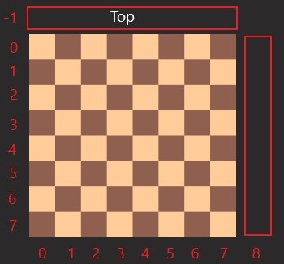
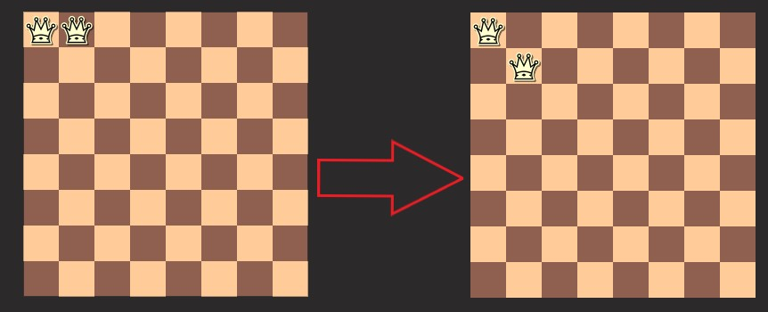
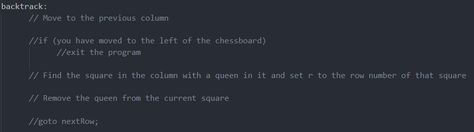

General
The purpose of this program is to solve the 8 Queens problem; place 8 Queens on a 8 x 8 Chessboard such that no two queens threathen each other. No two queens may be in the same row, column, or diagonal. This problem has 92 different configurations or solutions. This will be solved by implementing a backtracking algorithm.
Board Setup
2D Array: q[r][c] represents row r, column c. 1 is a queen and 0 is an empty square.
Column Section
What does top mean and last column mean?

Row Section
The Row Section can be broken down into 5 sections: Advance Row, Row Test, Up-Diagonal Test, Down-Diagonal Test, and Setting.
Advance Row
The first part of the row section is to check is you went past the last row.
Row Test
Checks if there is a queen on the same row. The for loop should check up to, but not including, the current column.
If so, move to the next row.

Up-Diagonal Test
Checks if there is an conflict on the up-diagonal. Start looking from one position back. If there is an conflict, move to the next row.
Down-Diagonal Test
Checks if there is an conflict on the down-diagonal. Start looking from one column back and at least one column foward.
If there is an conflict, move to the next row.
Setting
The final part, after is passes all the tests and found no conflicts, place a queen in that square and goes to the next column.
Backtrack Section

Backtracking is simply; just back one column.
But you need to make sure you dont backtrack too far, as to go off the board. In the event that you do backtrack all the past the board, terminate the program.
Start looking from the first row of that column. Look through the rows of this column in the q array. When the queen has been found, remove the queen from that square
and set it to the next row by going to the next row section.
Print Section
This section purpose is to print a completed configuration, solution, to the 8 Queens problem.
Here are the output
GoTo
goto allows you to jump to another point in the code specified by a label (within the same funcation). A label is followed by a colon.
This is to be submitted on blackboard as a .cpp file. File name follows the following format: lastName_firstName.cpp